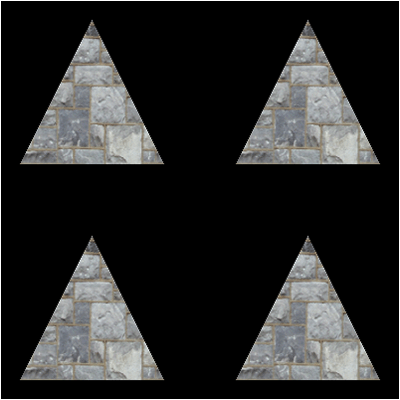

Sometimes graphics engines have a requirement to render numerous copies of the exact same geometry with just slight changes in position, scaling, color, and so forth.
Particle, foliage, and tree engines are good examples of these types of systems that use the same model hundreds or thousands of times with just slight changes for each time it renders a copy.
These systems tend to be very inefficient and send a large amount of data to the graphics card.
Instancing is a method of rendering in DirectX 11 that eliminates this problem by accepting a single vertex buffer with the geometry and then uses a second buffer called an Instance Buffer which carries the modification information for each instance of the model geometry.
The vertex buffer stays cached on the video card and then it is modified and rendered for each instance in the instance buffer.

For this tutorial I will be modifying the original texturing tutorial and use instancing to render four copies of the triangle with slightly different positions to show how instancing works on a basic level.
The ModelClass, TextureShaderClass, and the texture HLSL program will need slight modifications for instancing to work.
I usually start with the HLSL portion of the code, but for instancing it makes more sense if we start by looking at how to modify the ModelClass first.
Framework
We will use the same framework from the texturing tutorial.

Modelclass.h
////////////////////////////////////////////////////////////////////////////////
// Filename: modelclass.h
////////////////////////////////////////////////////////////////////////////////
#ifndef _MODELCLASS_H_
#define _MODELCLASS_H_
//////////////
// INCLUDES //
//////////////
#include <d3d11.h>
#include <directxmath.h>
#include <fstream>
using namespace DirectX;
using namespace std;
///////////////////////
// MY CLASS INCLUDES //
///////////////////////
#include "textureclass.h"
////////////////////////////////////////////////////////////////////////////////
// Class name: ModelClass
////////////////////////////////////////////////////////////////////////////////
class ModelClass
{
private:
struct VertexType
{
XMFLOAT3 position;
XMFLOAT2 texture;
};
We add a new structure that will hold the instance information.
In this tutorial we are modifying the position of each instance of the triangle so we use a position vector.
But note that it could be anything else you want to modify for each instance such as color, size, rotation, and so forth.
You can modify multiple things at once for each instance also.
struct InstanceType
{
XMFLOAT3 position;
};
public:
ModelClass();
ModelClass(const ModelClass&);
~ModelClass();
bool Initialize(ID3D11Device*, ID3D11DeviceContext*, char*);
void Shutdown();
void Render(ID3D11DeviceContext*);
We have two new functions for getting the vertex and instance counts.
We also removed the helper function which previously returned the index count as the instance count has replaced that.
int GetVertexCount();
int GetInstanceCount();
ID3D11ShaderResourceView* GetTexture();
private:
bool InitializeBuffers(ID3D11Device*);
void ShutdownBuffers();
void RenderBuffers(ID3D11DeviceContext*);
bool LoadTexture(ID3D11Device*, ID3D11DeviceContext*, char*);
void ReleaseTexture();
private:
ID3D11Buffer* m_vertexBuffer;
The ModelClass now has an instance buffer instead of an index buffer.
All buffers in DirectX 11 are generic so it uses the ID3D11Buffer type.
ID3D11Buffer* m_instanceBuffer;
int m_vertexCount;
The index count has been replaced with the instance count.
int m_instanceCount;
TextureClass* m_Texture;
};
#endif
Modelclass.cpp
////////////////////////////////////////////////////////////////////////////////
// Filename: modelclass.cpp
////////////////////////////////////////////////////////////////////////////////
#include "modelclass.h"
ModelClass::ModelClass()
{
m_vertexBuffer = 0;
Initialize the new instance buffer to null in the class constructor.
m_instanceBuffer = 0;
m_Texture = 0;
}
ModelClass::ModelClass(const ModelClass& other)
{
}
ModelClass::~ModelClass()
{
}
bool ModelClass::Initialize(ID3D11Device* device, ID3D11DeviceContext* deviceContext, char* textureFilename)
{
bool result;
// Initialize the vertex and index buffers.
result = InitializeBuffers(device);
if(!result)
{
return false;
}
// Load the texture for this model.
result = LoadTexture(device, deviceContext, textureFilename);
if(!result)
{
return false;
}
return true;
}
void ModelClass::Shutdown()
{
// Release the model texture.
ReleaseTexture();
// Shutdown the vertex and index buffers.
ShutdownBuffers();
return;
}
void ModelClass::Render(ID3D11DeviceContext* deviceContext)
{
// Put the vertex and index buffers on the graphics pipeline to prepare them for drawing.
RenderBuffers(deviceContext);
return;
}
These are the two new helper functions which return the vertex and instance counts.
int ModelClass::GetVertexCount()
{
return m_vertexCount;
}
int ModelClass::GetInstanceCount()
{
return m_instanceCount;
}
ID3D11ShaderResourceView* ModelClass::GetTexture()
{
return m_Texture->GetTexture();
}
bool ModelClass::InitializeBuffers(ID3D11Device* device)
{
VertexType* vertices;
InstanceType* instances;
D3D11_BUFFER_DESC vertexBufferDesc, instanceBufferDesc;
D3D11_SUBRESOURCE_DATA vertexData, instanceData;
HRESULT result;
We will start by manually setting up the vertex buffer that holds the triangle as usual, however there will be no index buffer setup with it this time.
// Set the number of vertices in the vertex array.
m_vertexCount = 3;
// Create the vertex array.
vertices = new VertexType[m_vertexCount];
// Load the vertex array with data.
vertices[0].position = XMFLOAT3(-1.0f, -1.0f, 0.0f); // Bottom left.
vertices[0].texture = XMFLOAT2(0.0f, 1.0f);
vertices[1].position = XMFLOAT3(0.0f, 1.0f, 0.0f); // Top middle.
vertices[1].texture = XMFLOAT2(0.5f, 0.0f);
vertices[2].position = XMFLOAT3(1.0f, -1.0f, 0.0f); // Bottom right.
vertices[2].texture = XMFLOAT2(1.0f, 1.0f);
// Set up the description of the static vertex buffer.
vertexBufferDesc.Usage = D3D11_USAGE_DEFAULT;
vertexBufferDesc.ByteWidth = sizeof(VertexType) * m_vertexCount;
vertexBufferDesc.BindFlags = D3D11_BIND_VERTEX_BUFFER;
vertexBufferDesc.CPUAccessFlags = 0;
vertexBufferDesc.MiscFlags = 0;
vertexBufferDesc.StructureByteStride = 0;
// Give the subresource structure a pointer to the vertex data.
vertexData.pSysMem = vertices;
vertexData.SysMemPitch = 0;
vertexData.SysMemSlicePitch = 0;
// Now create the vertex buffer.
result = device->CreateBuffer(&vertexBufferDesc, &vertexData, &m_vertexBuffer);
if(FAILED(result))
{
return false;
}
// Release the vertex array now that the vertex buffer has been created and loaded.
delete [] vertices;
vertices = 0;
We will now setup the new instance buffer.
We start by first setting the number of instances of the triangle that will need to be rendered.
For this tutorial I have manually set it to 4 so that we will have four triangles rendered on the screen.
// Set the number of instances in the array.
m_instanceCount = 4;
Next, we create a temporary instance array using the instance count.
Note we use the InstanceType structure for the array type which is defined in the ModelClass header file.
// Create the instance array.
instances = new InstanceType[m_instanceCount];
Now here is where we setup the different positions for each instance of the triangle.
I have set four different x, y, z positions for each triangle.
Note that this is where you could set color, scaling, different texture coordinates, and so forth.
An instance can be modified in any way you want it to be.
For this tutorial I used position as it is easy to see visually which helps understand how instancing works.
// Load the instance array with data.
instances[0].position = XMFLOAT3(-1.5f, -1.5f, 5.0f);
instances[1].position = XMFLOAT3(-1.5f, 1.5f, 5.0f);
instances[2].position = XMFLOAT3( 1.5f, -1.5f, 5.0f);
instances[3].position = XMFLOAT3( 1.5f, 1.5f, 5.0f);
The instance buffer description is setup exactly the same as a vertex buffer description.
// Set up the description of the instance buffer.
instanceBufferDesc.Usage = D3D11_USAGE_DEFAULT;
instanceBufferDesc.ByteWidth = sizeof(InstanceType) * m_instanceCount;
instanceBufferDesc.BindFlags = D3D11_BIND_VERTEX_BUFFER;
instanceBufferDesc.CPUAccessFlags = 0;
instanceBufferDesc.MiscFlags = 0;
instanceBufferDesc.StructureByteStride = 0;
Just like the vertex buffer we get the pointer to the instance array and then create the instance buffer.
Once the instance buffer is created, we can release the temporary instance array since the data from the array has been copied into the instance buffer.
// Give the subresource structure a pointer to the instance data.
instanceData.pSysMem = instances;
instanceData.SysMemPitch = 0;
instanceData.SysMemSlicePitch = 0;
// Create the instance buffer.
result = device->CreateBuffer(&instanceBufferDesc, &instanceData, &m_instanceBuffer);
if(FAILED(result))
{
return false;
}
// Release the instance array now that the instance buffer has been created and loaded.
delete [] instances;
instances = 0;
return true;
}
Release the new instance buffer in the ShutdownBuffers function.
void ModelClass::ShutdownBuffers()
{
// Release the instance buffer.
if(m_instanceBuffer)
{
m_instanceBuffer->Release();
m_instanceBuffer = 0;
}
// Release the vertex buffer.
if(m_vertexBuffer)
{
m_vertexBuffer->Release();
m_vertexBuffer = 0;
}
return;
}
void ModelClass::RenderBuffers(ID3D11DeviceContext* deviceContext)
{
unsigned int strides[2];
unsigned int offsets[2];
ID3D11Buffer* bufferPointers[2];
The instance buffer is just a second vertex buffer containing different information so it is set on the device at the same time using the same call as the vertex buffer.
So instead of how we previously sent in a single stride, offset, and buffer we now send an array of strides, offsets, and buffers to the IASetVertexBuffers call.
First, we set the two strides to the size of the VertexType and InstanceType.
// Set the buffer strides.
strides[0] = sizeof(VertexType);
strides[1] = sizeof(InstanceType);
We then set the offsets for both the vertex and instance buffer.
// Set the buffer offsets.
offsets[0] = 0;
offsets[1] = 0;
Next, we create an array that holds the pointers to the vertex buffer and the instance buffer.
// Set the array of pointers to the vertex and instance buffers.
bufferPointers[0] = m_vertexBuffer;
bufferPointers[1] = m_instanceBuffer;
Finally, we set both the vertex buffer and the instance buffer using the device context in the same call.
// Set the vertex buffer to active in the input assembler so it can be rendered.
deviceContext->IASetVertexBuffers(0, 2, bufferPointers, strides, offsets);
// Set the type of primitive that should be rendered from this vertex buffer, in this case triangles.
deviceContext->IASetPrimitiveTopology(D3D11_PRIMITIVE_TOPOLOGY_TRIANGLELIST);
return;
}
bool ModelClass::LoadTexture(ID3D11Device* device, ID3D11DeviceContext* deviceContext, char* textureFilename)
{
bool result;
// Create and initialize the texture object.
m_Texture = new TextureClass;
result = m_Texture->Initialize(device, deviceContext, textureFilename);
if(!result)
{
return false;
}
return true;
}
void ModelClass::ReleaseTexture()
{
// Release the texture object.
if(m_Texture)
{
m_Texture->Shutdown();
delete m_Texture;
m_Texture = 0;
}
return;
}
Textureshaderclass.h
The TextureShaderClass has been modified also to handle setting up instancing for the shader.
////////////////////////////////////////////////////////////////////////////////
// Filename: textureshaderclass.h
////////////////////////////////////////////////////////////////////////////////
#ifndef _TEXTURESHADERCLASS_H_
#define _TEXTURESHADERCLASS_H_
//////////////
// INCLUDES //
//////////////
#include <d3d11.h>
#include <d3dcompiler.h>
#include <directxmath.h>
#include <fstream>
using namespace DirectX;
using namespace std;
////////////////////////////////////////////////////////////////////////////////
// Class name: TextureShaderClass
////////////////////////////////////////////////////////////////////////////////
class TextureShaderClass
{
private:
struct MatrixBufferType
{
XMMATRIX world;
XMMATRIX view;
XMMATRIX projection;
};
public:
TextureShaderClass();
TextureShaderClass(const TextureShaderClass&);
~TextureShaderClass();
bool Initialize(ID3D11Device*, HWND);
void Shutdown();
bool Render(ID3D11DeviceContext*, int, int, XMMATRIX, XMMATRIX, XMMATRIX, ID3D11ShaderResourceView*);
private:
bool InitializeShader(ID3D11Device*, HWND, WCHAR*, WCHAR*);
void ShutdownShader();
void OutputShaderErrorMessage(ID3D10Blob*, HWND, WCHAR*);
bool SetShaderParameters(ID3D11DeviceContext*, XMMATRIX, XMMATRIX, XMMATRIX, ID3D11ShaderResourceView*);
void RenderShader(ID3D11DeviceContext*, int, int);
private:
ID3D11VertexShader* m_vertexShader;
ID3D11PixelShader* m_pixelShader;
ID3D11InputLayout* m_layout;
ID3D11Buffer* m_matrixBuffer;
ID3D11SamplerState* m_sampleState;
};
#endif
Textureshaderclass.cpp
////////////////////////////////////////////////////////////////////////////////
// Filename: textureshaderclass.cpp
////////////////////////////////////////////////////////////////////////////////
#include "textureshaderclass.h"
TextureShaderClass::TextureShaderClass()
{
m_vertexShader = 0;
m_pixelShader = 0;
m_layout = 0;
m_matrixBuffer = 0;
m_sampleState = 0;
}
TextureShaderClass::TextureShaderClass(const TextureShaderClass& other)
{
}
TextureShaderClass::~TextureShaderClass()
{
}
bool TextureShaderClass::Initialize(ID3D11Device* device, HWND hwnd)
{
wchar_t vsFilename[128], psFilename[128];
int error;
bool result;
// Set the filename of the vertex shader.
error = wcscpy_s(vsFilename, 128, L"../Engine/texture.vs");
if(error != 0)
{
return false;
}
// Set the filename of the pixel shader.
error = wcscpy_s(psFilename, 128, L"../Engine/texture.ps");
if(error != 0)
{
return false;
}
// Initialize the vertex and pixel shaders.
result = InitializeShader(device, hwnd, vsFilename, psFilename);
if(!result)
{
return false;
}
return true;
}
void TextureShaderClass::Shutdown()
{
// Shutdown the vertex and pixel shaders as well as the related objects.
ShutdownShader();
return;
}
The Render function now takes as input a vertex count and an instance count instead of the old index count.
bool TextureShaderClass::Render(ID3D11DeviceContext* deviceContext, int vertexCount, int instanceCount, XMMATRIX worldMatrix,
XMMATRIX viewMatrix, XMMATRIX projectionMatrix, ID3D11ShaderResourceView* texture)
{
bool result;
// Set the shader parameters that it will use for rendering.
result = SetShaderParameters(deviceContext, worldMatrix, viewMatrix, projectionMatrix, texture);
if(!result)
{
return false;
}
// Now render the prepared buffers with the shader.
RenderShader(deviceContext, vertexCount, instanceCount);
return true;
}
bool TextureShaderClass::InitializeShader(ID3D11Device* device, HWND hwnd, WCHAR* vsFilename, WCHAR* psFilename)
{
HRESULT result;
ID3D10Blob* errorMessage;
ID3D10Blob* vertexShaderBuffer;
ID3D10Blob* pixelShaderBuffer;
D3D11_INPUT_ELEMENT_DESC polygonLayout[3];
unsigned int numElements;
D3D11_BUFFER_DESC matrixBufferDesc;
D3D11_SAMPLER_DESC samplerDesc;
// Initialize the pointers this function will use to null.
errorMessage = 0;
vertexShaderBuffer = 0;
pixelShaderBuffer = 0;
// Compile the vertex shader code.
result = D3DCompileFromFile(vsFilename, NULL, NULL, "TextureVertexShader", "vs_5_0", D3D10_SHADER_ENABLE_STRICTNESS, 0,
&vertexShaderBuffer, &errorMessage);
if(FAILED(result))
{
// If the shader failed to compile it should have writen something to the error message.
if(errorMessage)
{
OutputShaderErrorMessage(errorMessage, hwnd, vsFilename);
}
// If there was nothing in the error message then it simply could not find the shader file itself.
else
{
MessageBox(hwnd, vsFilename, L"Missing Shader File", MB_OK);
}
return false;
}
// Compile the pixel shader code.
result = D3DCompileFromFile(psFilename, NULL, NULL, "TexturePixelShader", "ps_5_0", D3D10_SHADER_ENABLE_STRICTNESS, 0,
&pixelShaderBuffer, &errorMessage);
if(FAILED(result))
{
// If the shader failed to compile it should have writen something to the error message.
if(errorMessage)
{
OutputShaderErrorMessage(errorMessage, hwnd, psFilename);
}
// If there was nothing in the error message then it simply could not find the file itself.
else
{
MessageBox(hwnd, psFilename, L"Missing Shader File", MB_OK);
}
return false;
}
// Create the vertex shader from the buffer.
result = device->CreateVertexShader(vertexShaderBuffer->GetBufferPointer(), vertexShaderBuffer->GetBufferSize(), NULL, &m_vertexShader);
if(FAILED(result))
{
return false;
}
// Create the pixel shader from the buffer.
result = device->CreatePixelShader(pixelShaderBuffer->GetBufferPointer(), pixelShaderBuffer->GetBufferSize(), NULL, &m_pixelShader);
if(FAILED(result))
{
return false;
}
// Create the vertex input layout description.
polygonLayout[0].SemanticName = "POSITION";
polygonLayout[0].SemanticIndex = 0;
polygonLayout[0].Format = DXGI_FORMAT_R32G32B32_FLOAT;
polygonLayout[0].InputSlot = 0;
polygonLayout[0].AlignedByteOffset = 0;
polygonLayout[0].InputSlotClass = D3D11_INPUT_PER_VERTEX_DATA;
polygonLayout[0].InstanceDataStepRate = 0;
polygonLayout[1].SemanticName = "TEXCOORD";
polygonLayout[1].SemanticIndex = 0;
polygonLayout[1].Format = DXGI_FORMAT_R32G32_FLOAT;
polygonLayout[1].InputSlot = 0;
polygonLayout[1].AlignedByteOffset = D3D11_APPEND_ALIGNED_ELEMENT;
polygonLayout[1].InputSlotClass = D3D11_INPUT_PER_VERTEX_DATA;
polygonLayout[1].InstanceDataStepRate = 0;
For instancing we are going to add a third element to the layout.
As we plan to position the four instanced triangles in different positions in 3D space, we need to send the shader an extra position vector composed of three floats representing x, y, and z.
Therefore, the format is set to DXGI_FORMAT_R32G32B32_FLOAT.
The semantic name is set to TEXCOORD as we are just using a generic semantic.
Note that we have to set the semantic index to 1 in the layout since there is already a TEXCOORD for the texture coordinates using slot 0.
Now for the instancing specific stuff we set the InputSlotClass to D3D11_INPUT_PER_INSTANCE_DATA which indicates that this is instanced data.
Secondly the InstanceDataStepRate is now used and we set the step rate to 1 so that it will draw one instance before stepping forward a unit in the instance data.
Note also that this is the first unit in the instance buffer so we set the AlignedByteOffset to 0 again since we are not aligning to the vertex buffer with the instance data.
polygonLayout[2].SemanticName = "TEXCOORD";
polygonLayout[2].SemanticIndex = 1;
polygonLayout[2].Format = DXGI_FORMAT_R32G32B32_FLOAT;
polygonLayout[2].InputSlot = 1;
polygonLayout[2].AlignedByteOffset = 0;
polygonLayout[2].InputSlotClass = D3D11_INPUT_PER_INSTANCE_DATA;
polygonLayout[2].InstanceDataStepRate = 1;
// Get a count of the elements in the layout.
numElements = sizeof(polygonLayout) / sizeof(polygonLayout[0]);
// Create the vertex input layout.
result = device->CreateInputLayout(polygonLayout, numElements, vertexShaderBuffer->GetBufferPointer(),
vertexShaderBuffer->GetBufferSize(), &m_layout);
if(FAILED(result))
{
return false;
}
// Release the vertex shader buffer and pixel shader buffer since they are no longer needed.
vertexShaderBuffer->Release();
vertexShaderBuffer = 0;
pixelShaderBuffer->Release();
pixelShaderBuffer = 0;
// Setup the description of the dynamic matrix constant buffer that is in the vertex shader.
matrixBufferDesc.Usage = D3D11_USAGE_DYNAMIC;
matrixBufferDesc.ByteWidth = sizeof(MatrixBufferType);
matrixBufferDesc.BindFlags = D3D11_BIND_CONSTANT_BUFFER;
matrixBufferDesc.CPUAccessFlags = D3D11_CPU_ACCESS_WRITE;
matrixBufferDesc.MiscFlags = 0;
matrixBufferDesc.StructureByteStride = 0;
// Create the constant buffer pointer so we can access the vertex shader constant buffer from within this class.
result = device->CreateBuffer(&matrixBufferDesc, NULL, &m_matrixBuffer);
if(FAILED(result))
{
return false;
}
// Create a texture sampler state description.
samplerDesc.Filter = D3D11_FILTER_MIN_MAG_MIP_LINEAR;
samplerDesc.AddressU = D3D11_TEXTURE_ADDRESS_WRAP;
samplerDesc.AddressV = D3D11_TEXTURE_ADDRESS_WRAP;
samplerDesc.AddressW = D3D11_TEXTURE_ADDRESS_WRAP;
samplerDesc.MipLODBias = 0.0f;
samplerDesc.MaxAnisotropy = 1;
samplerDesc.ComparisonFunc = D3D11_COMPARISON_ALWAYS;
samplerDesc.BorderColor[0] = 0;
samplerDesc.BorderColor[1] = 0;
samplerDesc.BorderColor[2] = 0;
samplerDesc.BorderColor[3] = 0;
samplerDesc.MinLOD = 0;
samplerDesc.MaxLOD = D3D11_FLOAT32_MAX;
// Create the texture sampler state.
result = device->CreateSamplerState(&samplerDesc, &m_sampleState);
if(FAILED(result))
{
return false;
}
return true;
}
void TextureShaderClass::ShutdownShader()
{
// Release the sampler state.
if(m_sampleState)
{
m_sampleState->Release();
m_sampleState = 0;
}
// Release the matrix constant buffer.
if(m_matrixBuffer)
{
m_matrixBuffer->Release();
m_matrixBuffer = 0;
}
// Release the layout.
if(m_layout)
{
m_layout->Release();
m_layout = 0;
}
// Release the pixel shader.
if(m_pixelShader)
{
m_pixelShader->Release();
m_pixelShader = 0;
}
// Release the vertex shader.
if(m_vertexShader)
{
m_vertexShader->Release();
m_vertexShader = 0;
}
return;
}
void TextureShaderClass::OutputShaderErrorMessage(ID3D10Blob* errorMessage, HWND hwnd, WCHAR* shaderFilename)
{
char* compileErrors;
unsigned long long bufferSize, i;
ofstream fout;
// Get a pointer to the error message text buffer.
compileErrors = (char*)(errorMessage->GetBufferPointer());
// Get the length of the message.
bufferSize = errorMessage->GetBufferSize();
// Open a file to write the error message to.
fout.open("shader-error.txt");
// Write out the error message.
for(i=0; i<bufferSize; i++)
{
fout << compileErrors[i];
}
// Close the file.
fout.close();
// Release the error message.
errorMessage->Release();
errorMessage = 0;
// Pop a message up on the screen to notify the user to check the text file for compile errors.
MessageBox(hwnd, L"Error compiling shader. Check shader-error.txt for message.", shaderFilename, MB_OK);
return;
}
bool TextureShaderClass::SetShaderParameters(ID3D11DeviceContext* deviceContext, XMMATRIX worldMatrix, XMMATRIX viewMatrix,
XMMATRIX projectionMatrix, ID3D11ShaderResourceView* texture)
{
HRESULT result;
D3D11_MAPPED_SUBRESOURCE mappedResource;
MatrixBufferType* dataPtr;
unsigned int bufferNumber;
// Transpose the matrices to prepare them for the shader.
worldMatrix = XMMatrixTranspose(worldMatrix);
viewMatrix = XMMatrixTranspose(viewMatrix);
projectionMatrix = XMMatrixTranspose(projectionMatrix);
// Lock the constant buffer so it can be written to.
result = deviceContext->Map(m_matrixBuffer, 0, D3D11_MAP_WRITE_DISCARD, 0, &mappedResource);
if(FAILED(result))
{
return false;
}
// Get a pointer to the data in the constant buffer.
dataPtr = (MatrixBufferType*)mappedResource.pData;
// Copy the matrices into the constant buffer.
dataPtr->world = worldMatrix;
dataPtr->view = viewMatrix;
dataPtr->projection = projectionMatrix;
// Unlock the constant buffer.
deviceContext->Unmap(m_matrixBuffer, 0);
// Set the position of the constant buffer in the vertex shader.
bufferNumber = 0;
// Finanly set the constant buffer in the vertex shader with the updated values.
deviceContext->VSSetConstantBuffers(bufferNumber, 1, &m_matrixBuffer);
// Set shader texture resource in the pixel shader.
deviceContext->PSSetShaderResources(0, 1, &texture);
return true;
}
The RenderShader function is different in two ways.
First is that it takes as input the vertex and instance count instead of how it used to take in just an index count.
Secondly it uses the DrawInstanced function to draw the triangles instead of using the DrawIndexed function.
void TextureShaderClass::RenderShader(ID3D11DeviceContext* deviceContext, int vertexCount, int instanceCount)
{
// Set the vertex input layout.
deviceContext->IASetInputLayout(m_layout);
// Set the vertex and pixel shaders that will be used to render this triangle.
deviceContext->VSSetShader(m_vertexShader, NULL, 0);
deviceContext->PSSetShader(m_pixelShader, NULL, 0);
// Set the sampler state in the pixel shader.
deviceContext->PSSetSamplers(0, 1, &m_sampleState);
// Render the triangle.
deviceContext->DrawInstanced(vertexCount, instanceCount, 0, 0);
return;
}
Texture.vs
The vertex shader has now been modified to use instancing.
////////////////////////////////////////////////////////////////////////////////
// Filename: texture.vs
////////////////////////////////////////////////////////////////////////////////
/////////////
// GLOBALS //
/////////////
cbuffer MatrixBuffer
{
matrix worldMatrix;
matrix viewMatrix;
matrix projectionMatrix;
};
//////////////
// TYPEDEFS //
//////////////
The VertexInputType structure now has the third element which will hold the instanced input position data.
struct VertexInputType
{
float4 position : POSITION;
float2 tex : TEXCOORD0;
float3 instancePosition : TEXCOORD1;
};
struct PixelInputType
{
float4 position : SV_POSITION;
float2 tex : TEXCOORD0;
};
////////////////////////////////////////////////////////////////////////////////
// Vertex Shader
////////////////////////////////////////////////////////////////////////////////
PixelInputType TextureVertexShader(VertexInputType input)
{
PixelInputType output;
// Change the position vector to be 4 units for proper matrix calculations.
input.position.w = 1.0f;
Here is where we use the instanced position information to modify the position of each triangle we are drawing.
// Update the position of the vertices based on the data for this particular instance.
input.position.x += input.instancePosition.x;
input.position.y += input.instancePosition.y;
input.position.z += input.instancePosition.z;
// Calculate the position of the vertex against the world, view, and projection matrices.
output.position = mul(input.position, worldMatrix);
output.position = mul(output.position, viewMatrix);
output.position = mul(output.position, projectionMatrix);
// Store the texture coordinates for the pixel shader.
output.tex = input.tex;
return output;
}
Texture.ps
The pixel shader has not changed for this tutorial.
////////////////////////////////////////////////////////////////////////////////
// Filename: texture.ps
////////////////////////////////////////////////////////////////////////////////
/////////////
// GLOBALS //
/////////////
Texture2D shaderTexture : register(t0);
SamplerState SampleType : register(s0);
//////////////
// TYPEDEFS //
//////////////
struct PixelInputType
{
float4 position : SV_POSITION;
float2 tex : TEXCOORD0;
};
////////////////////////////////////////////////////////////////////////////////
// Pixel Shader
////////////////////////////////////////////////////////////////////////////////
float4 TexturePixelShader(PixelInputType input) : SV_TARGET
{
float4 textureColor;
// Sample the pixel color from the texture using the sampler at this texture coordinate location.
textureColor = shaderTexture.Sample(SampleType, input.tex);
return textureColor;
}
Applicationclass.h
The ApplicationClass header has not changed for this tutorial.
////////////////////////////////////////////////////////////////////////////////
// Filename: applicationclass.h
////////////////////////////////////////////////////////////////////////////////
#ifndef _APPLICATIONCLASS_H_
#define _APPLICATIONCLASS_H_
/////////////
// GLOBALS //
/////////////
const bool FULL_SCREEN = false;
const bool VSYNC_ENABLED = true;
const float SCREEN_NEAR = 0.3f;
const float SCREEN_DEPTH = 1000.0f;
///////////////////////
// MY CLASS INCLUDES //
///////////////////////
#include "d3dclass.h"
#include "inputclass.h"
#include "cameraclass.h"
#include "modelclass.h"
#include "textureshaderclass.h"
////////////////////////////////////////////////////////////////////////////////
// Class name: ApplicationClass
////////////////////////////////////////////////////////////////////////////////
class ApplicationClass
{
public:
ApplicationClass();
ApplicationClass(const ApplicationClass&);
~ApplicationClass();
bool Initialize(int, int, HWND);
void Shutdown();
bool Frame(InputClass*);
private:
bool Render();
private:
D3DClass* m_Direct3D;
CameraClass* m_Camera;
ModelClass* m_Model;
TextureShaderClass* m_TextureShader;
};
#endif
Applicationclass.cpp
////////////////////////////////////////////////////////////////////////////////
// Filename: applicationclass.cpp
////////////////////////////////////////////////////////////////////////////////
#include "applicationclass.h"
ApplicationClass::ApplicationClass()
{
m_Direct3D = 0;
m_Camera = 0;
m_Model = 0;
m_TextureShader = 0;
}
ApplicationClass::ApplicationClass(const ApplicationClass& other)
{
}
ApplicationClass::~ApplicationClass()
{
}
bool ApplicationClass::Initialize(int screenWidth, int screenHeight, HWND hwnd)
{
char textureFilename[128];
bool result;
// Create and initialize the Direct3D object.
m_Direct3D = new D3DClass;
result = m_Direct3D->Initialize(screenWidth, screenHeight, VSYNC_ENABLED, hwnd, FULL_SCREEN, SCREEN_DEPTH, SCREEN_NEAR);
if(!result)
{
MessageBox(hwnd, L"Could not initialize Direct3D.", L"Error", MB_OK);
return false;
}
// Create and initialize the camera object.
m_Camera = new CameraClass;
m_Camera->SetPosition(0.0f, 0.0f, -5.0f);
m_Camera->Render();
m_Camera->RenderBaseViewMatrix();
// Create and initialize the cube model object.
m_Model = new ModelClass;
strcpy_s(textureFilename, "../Engine/data/stone01.tga");
result = m_Model->Initialize(m_Direct3D->GetDevice(), m_Direct3D->GetDeviceContext(), textureFilename);
if(!result)
{
MessageBox(hwnd, L"Could not initialize the model object.", L"Error", MB_OK);
return false;
}
// Create and initialize the texture shader object.
m_TextureShader = new TextureShaderClass;
result = m_TextureShader ->Initialize(m_Direct3D->GetDevice(), hwnd);
if(!result)
{
MessageBox(hwnd, L"Could not initialize the texture shader object.", L"Error", MB_OK);
return false;
}
return true;
}
void ApplicationClass::Shutdown()
{
// Release the texture shader object.
if(m_TextureShader)
{
m_TextureShader->Shutdown();
delete m_TextureShader;
m_TextureShader = 0;
}
// Release the cube model object.
if(m_Model)
{
m_Model->Shutdown();
delete m_Model;
m_Model = 0;
}
// Release the camera object.
if(m_Camera)
{
delete m_Camera;
m_Camera = 0;
}
// Release the Direct3D object.
if(m_Direct3D)
{
m_Direct3D->Shutdown();
delete m_Direct3D;
m_Direct3D = 0;
}
return;
}
bool ApplicationClass::Frame(InputClass* Input)
{
bool result;
// Check if the escape key has been pressed, if so quit.
if(Input->IsEscapePressed() == true)
{
return false;
}
// Render the final graphics scene.
result = Render();
if(!result)
{
return false;
}
return true;
}
bool ApplicationClass::Render()
{
XMMATRIX worldMatrix, viewMatrix, projectionMatrix;
bool result;
// Clear the buffers to begin the scene.
m_Direct3D->BeginScene(0.0f, 0.0f, 0.0f, 1.0f);
// Get the matrices from the camera and d3d objects.
m_Direct3D->GetWorldMatrix(worldMatrix);
m_Camera->GetViewMatrix(viewMatrix);
m_Direct3D->GetProjectionMatrix(projectionMatrix);
// Render the full screen window using the glow shader.
m_Model->Render(m_Direct3D->GetDeviceContext());
The Render function for the shader now requires the vertex and instance count from the model object.
result = m_TextureShader->Render(m_Direct3D->GetDeviceContext(), m_Model->GetVertexCount(), m_Model->GetInstanceCount(),
worldMatrix, viewMatrix, projectionMatrix, m_Model->GetTexture());
if(!result)
{
return false;
}
// Present the rendered scene to the screen.
m_Direct3D->EndScene();
return true;
}
Summary
With instancing we can now use just a single copy of geometry and render it multiple times with each instance having its own unique rendering properties.
To Do Exercises
1. Compile and run the program. You should see four triangles drawn using just a single triangle model.
2. Modify the position information to place the four triangles differently.
3. Add a fifth instance of the triangle.
4. Modify the color information also for each instance.
Source Code
Source Code and Data Files: dx11win10tut48_src.zip